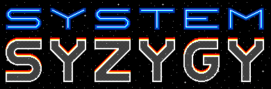

mdsteele.games

About
Download
GitHub
🍏
Download System Syzygy v1.0.0 for Mac OS X (2.9 MB)
or get it for free on the
Mac App Store
🐧
System Syzygy for Debian Linux can be built from
source code
.
🏠
System Syzygy is not yet available for Windows.